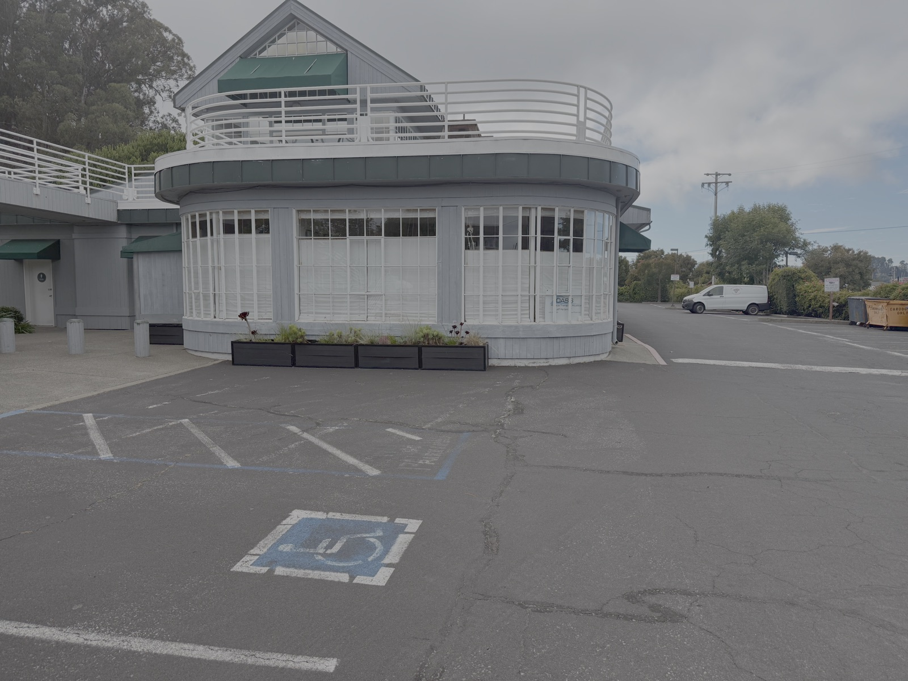

Office & directions
Just off Bridgeway and 101 in Sausalito.
Need help finding us? Call or text (415) 806-7034.
4000 Bridgeway, Suite 301
Sausalito, CA 94965
Sausalito, CA 94965
- Parking
- Park in the rear lot behind the building.
- Finding the suite
- Suite 301 is on the ground floor with the hemispherical windows.
- Mailing address
- P.O. Box 821, Sausalito, CA 94966
- Phone, email & fax
- (415) 806-7034
tomfsfcal@gmail.com
Fax (415) 390-8017

Driving directions
From 101 North or South.
The building is on your left on Gate 5 Rd, with parking in the rear.
- Take Exit 445A toward Marin City / Sausalito.
- After exiting, drive toward Sausalito.
- At the first signal, turn right onto Bridgeway.
- Continue on Bridgeway to the next signal, Gate 5 Rd.
- Turn left onto Gate 5 Rd.
- 4000 Bridgeway is on your left. Park in the rear.
- Suite 301 is on the ground floor, behind the hemispherical windows.